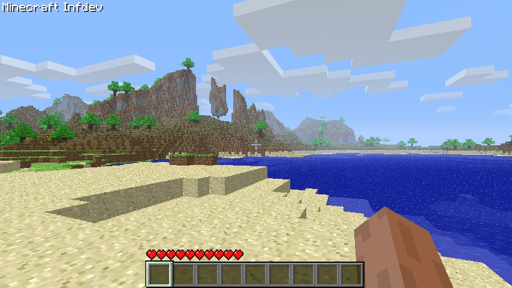
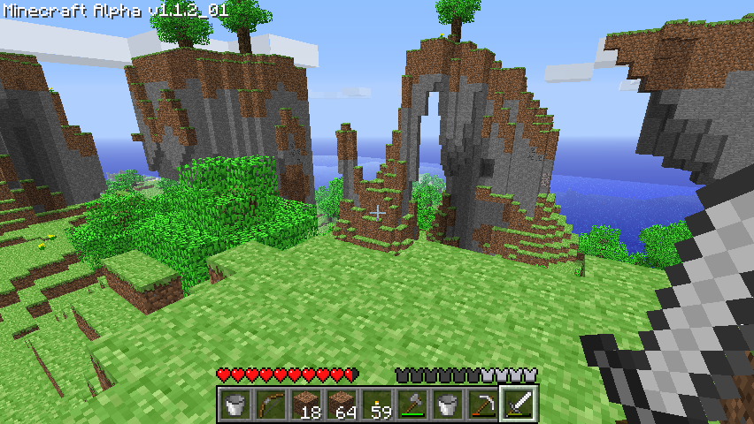
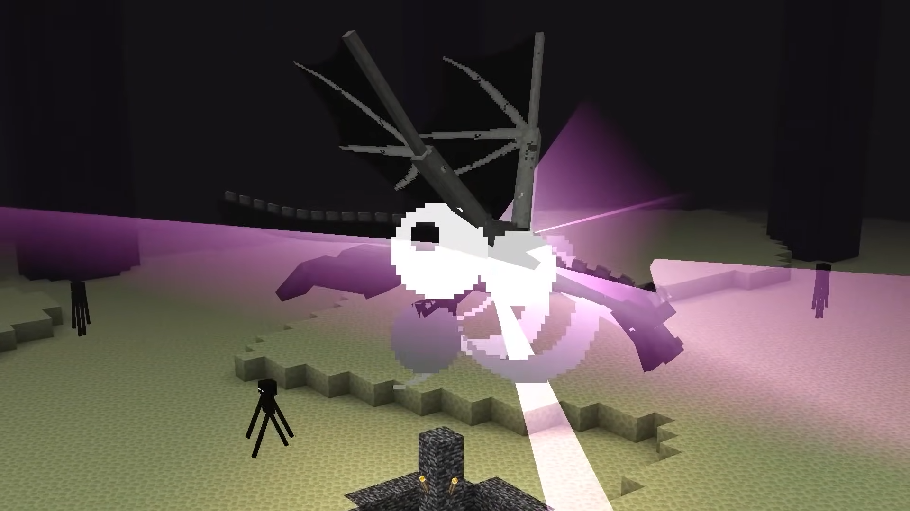
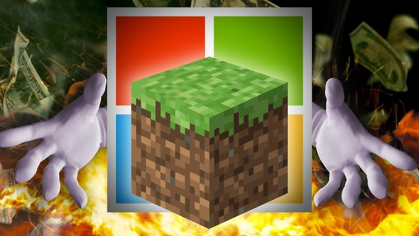
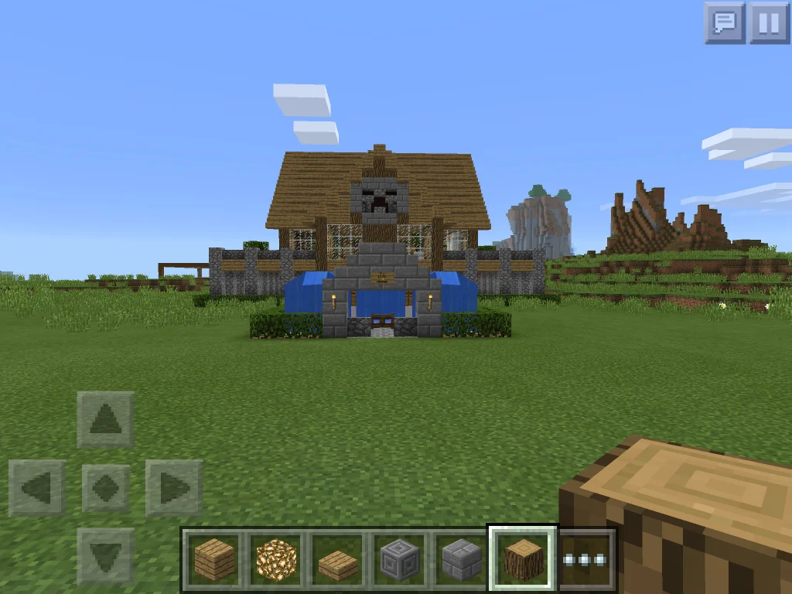
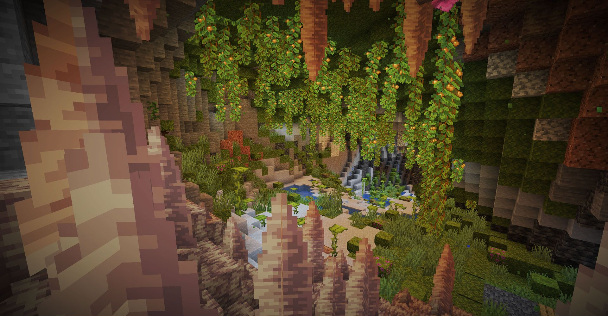
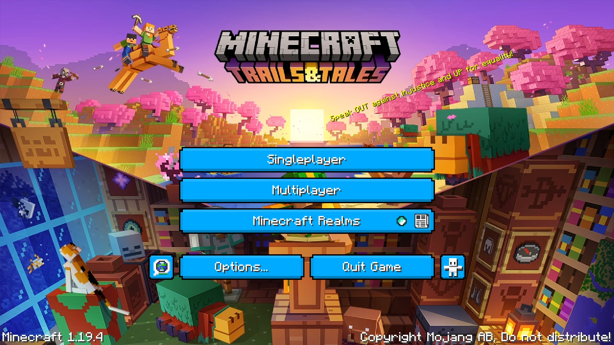
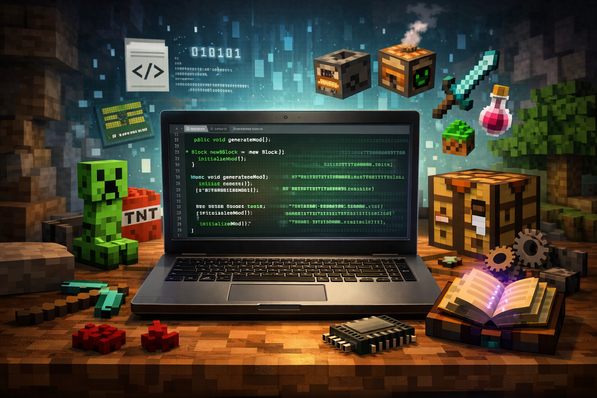

Menü
Menü
Minecraft 2009-ben indult Markus “Notch” Persson fejlesztésében, mint egy kísérleti indie projekt. Az első verziók még nagyon alapvetőek voltak, és főként az építési mechanikára koncentráltak. A játék fejlesztése kezdetben nyílt formában történt, és a közösség már az első tesztverzióktól kezdve részt vett a fejlődésben visszajelzésekkel. A korai build-ek gyorsan terjedtek az interneten, ami segítette a népszerűség növekedését. Ebben az időszakban a forráskód még nem volt teljesen nyilvános, de a fejlesztési folyamat átlátható volt a játékosok számára. A projekt fokozatosan vált ismertté az online közösségekben. Ez az év alapozta meg a későbbi robbanásszerű növekedést.

2010-ben a Minecraft jelentős fejlesztési szintet lépett a Survival mód bevezetésével. Ezzel a játék már nem csak kreatív építés volt, hanem valódi túlélési élmény is. Ebben az időszakban jelentek meg az alap játékmechanikák: életrendszer, éhség, mobok és crafting rendszer. A közösség egyre aktívabb lett, és a visszajelzések alapján a fejlesztés gyors tempóban haladt. A játék eladási modellje is formálódott. A korai hozzáférésű vásárlásokból származó bevételek segítették a további fejlesztést és a projekt stabilizálását.

2011-ben a Minecraft hivatalosan is teljes verzióként megjelent (1.0). Ez mérföldkő volt, mert a játék már nem csak tesztprojekt volt, hanem stabil, véglegesnek tekintett kiadás. Ebben az évben került be az End dimenzió és az Ender Dragon, amely végjáték célt adott a túlélésnek. Ugyanebben az időszakban Markus Persson megalapította a Mojang Studios-t, amely hivatalosan is a Minecraft fejlesztéséért felelt. A játék ekkor már nemzetközi sikerré vált.

Ebben az időszakban a Minecraft népszerűsége folyamatosan nőtt, különösen YouTube-on és közösségi platformokon. A játék erős modding közösséget épített ki, és a szerverek, mini-játékok és kreatív projektek hatalmas ökoszisztémát hoztak létre. 2014-ben hatalmas fordulópont történt: a Mojang Studios és a Minecraft tulajdonjoga hivatalosan a Microsoft részére került értékesítésre. Az üzlet értéke több milliárd dollár volt, és ez biztosította a játék hosszú távú fejlesztését, támogatását és platformfüggetlen bővülését. Ez az esemény biztosította, hogy a Minecraft ne egy rövid életciklusú projekt legyen, hanem egy tartós platform.

A Microsoft tulajdonlása alatt a játék több platformra is kiterjedt: PC (Java Edition és Bedrock Edition), Konzolok (Xbox, PlayStation, Nintendo Switch), Mobil eszközök (iOS, Android), Megjelent a Bedrock Edition, amely egységesítette a különböző platformokat és lehetővé tette a cross-play rendszert. Ebben az időszakban a játék technikai stabilitása és rendszerintegrációja vált fontossá. A multiplayer infrastruktúra és az online funkciók jelentősen fejlődtek.

A modern korszak egyik legnagyobb fejlesztési fókusza a világ generálásának átalakítása volt. A Nether teljes újratervezést kapott, majd később a Caves & Cliffs frissítés alapjaiban változtatta meg a hegyek és barlangok struktúráját. A világ mélyebb, magasabb és részletesebb lett. Ebben az időszakban a fejlesztés már folyamatos live-service modellben zajlott, rendszeres tartalomfrissítésekkel.

A Minecraft ma már egy élő, folyamatosan fejlődő platform. Új mobok, új dekorációs elemek, archeológiai rendszer és további funkciók kerültek be. A fejlesztés célja az, hogy a játék hosszú távon is releváns maradjon, miközben megőrzi alap identitását. A közösség, a szerverek és a modding világ továbbra is meghatározó szerepet játszanak a Minecraft jövőjében.

A Minecraft fejlődésének egyik legfontosabb pillanata az volt, amikor a Mojang bizonyos mértékben nyilvánossá tette a játék forráskódját és technikai felépítésének részleteit a közösség számára. Bár a teljes forráskód nem lett mindenki számára szabadon elérhető, a fejlesztői eszközök, API-k és egyes részek átláthatóbbá váltak. Ez hatalmas mérföldkő volt a modding közösség számára. A hozzáférhetőbb struktúra lehetővé tette, hogy fejlesztők saját módosításokat, kiegészítéseket és teljesen új játékmeneti rendszereket hozzanak létre. Ennek köszönhetően jelentek meg a nagy modding platformok és frameworkök, amelyek ma is meghatározó szerepet játszanak a Minecraft ökoszisztémájában. A modok nemcsak új blokkokat és tárgyakat adtak a játékhoz, hanem teljesen új dimenziókat, gépezeteket, technológiai rendszereket és RPG elemeket is. Sok népszerű mod és modpack közösségi fejlesztésként indult, majd később hatalmas projekté nőtte ki magát. Ez a lépés bizonyította, hogy a Minecraft nem csak egy zárt játék, hanem egy platform, amelyet a közösség is képes továbbfejleszteni és kibővíteni. A modding kultúra ma már a játék egyik legfontosabb pillére.
